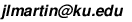

The Combinatorics Seminar meets on Friday, 3-4 PM, in Snow 408.
Please contact Jeremy Martin if you are interested in speaking.
Friday 1/24
No seminar
Friday 1/31
No seminar
Friday 2/7
No seminar
Friday 2/14
Mikhail Mazin (Kansas State)
Rational Slope Parking Functions and Affine Permutations
Abstract: Pak and Stanley constructed a map from the set of connected components of the complement to the \(k\)-Shi arrangement to the set of \(k\)-parking functions. It follows from the work of Fishel and Vazirani that these connected components are in bijection with \(kn+1\)-stable affine permutations on \(n\) elements (i.e. permutations with no inversions of height \(kn+1\)). We generalize Pak-Stanley labeling by constructing a map from the set of \(m\)-stable affine permutations to the set of rational slope parking functions. It follows from the work of Stanley that the map is a bijection for \(m=kn+1\). We extend this argument to cover the case \(m=kn-1\) and conjecture that the map is a bijection for all relatively prime (\(m,n\)). We also show that \(m\)-stable permutations label the cells in a cell decomposition in an affine Springer fiber considered by Hikita, with the dimension of the corresponding cell equal to the sum of values of the corresponding parking function.
In addition, we construct another map between the same sets and prove that it is a bijection for all relatively prime (\(m,n\)). The resulting map from the set of rational parking functions to itself is a direct generalization of the map zeta from the set of Dyck paths to itself, originally constructed by Haglund. Therefore, this work can be viewed as a bridge between two previously unrelated areas in combinatorics.
The talk is based on a joint work in progress with Eugene Gorsky and Monica Vazirani.
Friday 2/21
No seminar
Friday 2/28
No seminar
Friday 3/7
Jeremy Martin
Stanley's Diamond Conjecture
Abstract: Every simplicial complex that is a cone is acyclic. The converse of this statement is extremely false, but Stanley proved that for every acyclic complex \(X\), there is a subcomplex \(X'\) such that \(X\) strongly resembles a cone with base \(X'\). I will explain what "strongly resembles" means and sketch the proof of this theorem, which is a nice application of Stanley-Reisner theory. I'll go on to describe Stanley's more general conjecture about "\(k\)-acyclic complexes" (which are relaxations of \(k\)-fold iterated cones).
Friday 3/14
Tom Enkosky (US Coast Guard Academy)
Bounds on the number of \(h\)-vectors of fixed length
Abstract: The \(h\)-vector of a standard graded ring is a list of the dimensions of each graded component. Let \(L(n)\) be the number of possible \(h\)-vectors whose terms sum to \(n\) (i.e., the number of \(h\)-vectors for graded rings of dimension \(n\)). We show that the sequence \(L(n)\) is bounded above by the Fibonacci sequence and bounded below by the sequence whose \(n\)th term is the number of integer partitions of \(n\) into distinct parts. This is joint work with Branden Stone.
Friday 3/21
No seminar (Spring Break)
Friday 3/28
No seminar
Friday 4/4
Alex Lazar
Tropical Simplicial Complexes
Friday 4/11
Alex Lazar
Tropical Simplicial Complexes II
Friday 4/18
Andrew Berget (University of Washington)
Critical groups of graphs with reflective symmetry
Abstract: The critical group of a graph is a finite abelian group whose order is the number of spanning trees of the graph. When a graph has a certain reflective symmetry, its spanning tree number factors as the product of the number of spanning trees of two easily constructed graphs. In this talk I'll explain a result that interprets this identity at the level of critical groups. To do this, I'll discuss the bicycle space of a graph. A good understanding of abelian groups is the only prerequisite for the talk, and it should be very grad student friendly.
Friday 4/25
No seminar
Friday 5/2
William Espenschied
Complete Bipartite Graphs, Polytopes, and You
Friday 5/9
No seminar

Last updated Mon 4/28/14